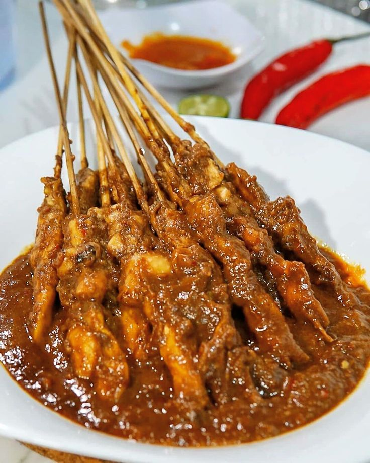
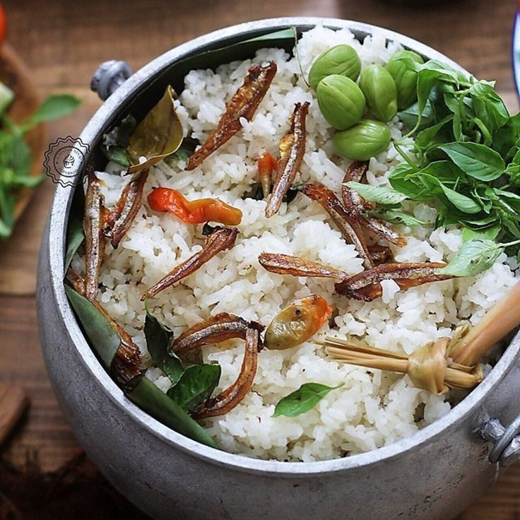
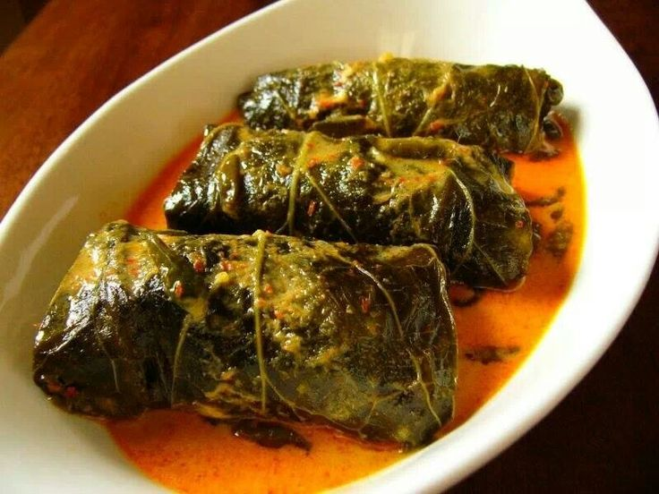
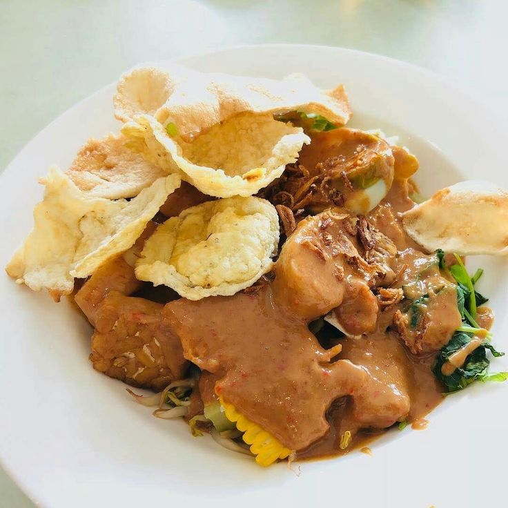

Makanan Khas Indonesia
Sate (Jawa Timur)

Sate adalah makanan yang terdiri dari potongan daging sapi, daging ayam, daging kambing, dan ikan yang dipotong kecil-kecil seperti dadu yang kemudian di tusukan pada tusukan sate yang pada umumnya dari bambu kemudian dibakar di atas bara api arang, dan diberi bumbu sesuai dengan macam-macam dari jenis sate tersebut.
Nasi Liwet (Jawa Barat)

Nasi liwet merupakan hidangan khas kota solo berupa nasi gurih yang diolah menggunakan air santan.
Buntil (Jawa Tengah)

Buntil sebenarnya adalah semacam bothok yang dibungkus dengan daun muda singkong dan diberi sedikit cairan kuah pedas yang terbuat dari santan. Isinya adalah parutan kelapa yang diberi bumbu. Daun pembungkus lain yang sering digunakan adalah daun talas, daun pepaya, atau daun sente.
Gado-Gado (Betawi)

Gado-gado merupakan makanan khas Betawi berupa sayur-sayuran yang direbus dan dicampur jadi satu, dengan bumbu kacang atau saus dari kacang tanah dan yang dihaluskan disertai irisan telur dan pada umumnya banyak yang menambahkan kentang rebus yang sudah dihaluskan.
Brongkos (Yogyakarta)

Brongkos adalah salah satu hidangan istimewa di Keraton Yogyakarta, dan disebut sebagai hidangan kegemaran almarhum Sultan Hamengkubuwono IX dan pewarisnya Sultan Hamengkubuwono X, dan disajikan di restoran Bale Raos, restoran yang terletak di dalam kompleks Keraton Yogyakarta yang menyajikan hidangan istimewa khas.